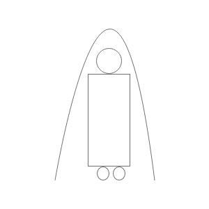

Product Request: AeroZone
October 19, 2020
An interesting product that should exist is the AeroZone: A personal, portable environment.

The AeroZone is a controlled environment for each person, which features:
- Temperature control to simulate cold, normal, and hot weather conditions
- Protective shielding for the user using the high pressure air layers
- Seamless and smart interaction with the outside environment